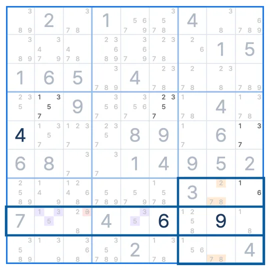

SUDOKU TECHNIQUE · Etapa 9 · ALS (conjuntos casi bloqueados)
Sue de Coq
Sue de Coq es una técnica de sudoku en la que los candidatos de las celdas donde se cruzan una caja y una línea se reparten entre una celda de la línea y una celda de la caja, y así eliminas los números de cada lado del resto de la línea y del resto de la caja.
- Celdas necesarias
- 2 del cruce + 1 de la línea + 1 de la caja
- Candidatos
- Cuatro números en total
- Qué eliminar
- El resto de la línea y de la caja
El patrón Sue de Coq
Donde se cruzan la fila 1 y la caja 1 están R1C1 (1, 2, 4, 5) y R1C2 (1, 4, 5). Del lado de la fila está R1C7 (1, 2), y del lado de la caja, R3C3 (4, 5). Entre las cuatro celdas tienen 1, 2, 4 y 5: el 1 y el 2 van del lado de la fila, y el 4 y el 5, del lado de la caja.
¿Por qué funciona?
Todos los candidatos de las cuatro celdas (las dos del cruce, R1C7 y R3C3) están entre 1, 2, 4 y 5. Las celdas del cruce están en la misma fila que la celda de la fila y en la misma caja que la celda de la caja, así que no pueden repetir ningún número con ellas. El lado de la fila (1, 2) y el de la caja (4, 5) no comparten números, así que las cuatro celdas tienen 1, 2, 4 y 5, uno cada una.
Entonces el 1 y el 2 están dentro de la fila 1, en las celdas del cruce o en R1C7, y ninguna otra celda de la fila 1 puede tenerlos. El 4 y el 5 están dentro de la caja 1, en las celdas del cruce o en R3C3, y ninguna otra celda de la caja puede tenerlos. Por eso eliminas el 1 de R1C5 y el 5 de R2C3.
Cómo encontrar Sue de Coq
- Donde se cruzan una caja y una línea, busca dos celdas cuyos candidatos sumen cuatro números (o tres celdas con cinco).
- En la línea, busca una celda con solo dos de esos números, y en la caja, una celda con solo los otros dos. Los dos lados no pueden compartir ningún número.
- Elimina los números del lado de la línea del resto de la línea y los del lado de la caja del resto de la caja.
Haz la lección de Sue de Coq
Prueba una lección de técnicas de Sudoku League.
Primero haz la lección del concepto Conjuntos casi bloqueados ▸
Cargando
Dudas frecuentes
¿De dónde viene el nombre Sue de Coq?
Viene del apodo de la persona que dio a conocer esta técnica. El nombre quedó, aunque no describe el patrón.
¿El cruce puede tener tres celdas?
Sí. Con tres celdas, sus candidatos suman cinco números, y el lado de la línea y el de la caja se reparten el resto.
¿Y si la celda de la línea y la de la caja comparten un número?
Entonces no sirve. Los números de cada lado tienen que ser distintos.
Técnicas similares
EN LA APP SUDOKU LEAGUE
Si te atascas, una pista te muestra Sue de Coq
Si te atascas y tocas la pista, se marcan en el tablero las celdas del cruce, las celdas de la línea y de la caja, y los candidatos que puedes eliminar. En Práctica de técnicas aprendes la técnica Sue de Coq sobre un sudoku real. En el primer tablero ves la forma y el porqué, y en el siguiente la encuentras tú.

EVENT · SUDOKU LEAGUE PREMIUM
1 MES GRATIS
Pistas ilimitadas · Repetición · 6 packs de temas · Práctica de técnicas
Obtener cupón ▸limitada